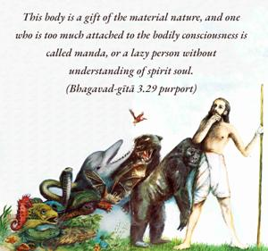
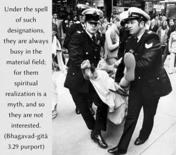

Bewildered by the modes of material nature, the ignorant fully engage themselves in material activities and become attached. But the wise should not unsettle them, although these duties are inferior due to the performers’ lack of knowledge.


Persons who are unknowledgeable falsely identify with gross material consciousness and are full of material designations. This body is a gift of the material nature, and one who is too much attached to the bodily consciousness is called manda, or a lazy person without understanding of spirit soul. Ignorant men think of the body as the self; they accept bodily connections with others as kinsmanship, the land in which the body is obtained is their object of worship, and they consider the formalities of religious rituals to be ends in themselves. Social work, nationalism and altruism are some of the activities for such materially designated persons. Under the spell of such designations, they are always busy in the material field; for them spiritual realization is a myth, and so they are not interested. Those who are enlightened in spiritual life, however, should not try to agitate such materially engrossed persons. Better to prosecute one’s own spiritual activities silently. Such bewildered persons may be engaged in such primary moral principles of life as nonviolence and similar materially benevolent work.
Men who are ignorant cannot appreciate activities in Kṛṣṇa consciousness, and therefore Lord Kṛṣṇa advises us not to disturb them and simply waste valuable time. But the devotees of the Lord are more kind than the Lord because they understand the purpose of the Lord. Consequently they undertake all kinds of risks, even to the point of approaching ignorant men to try to engage them in the acts of Kṛṣṇa consciousness, which are absolutely necessary for the human being.